¿Qué es el Té?
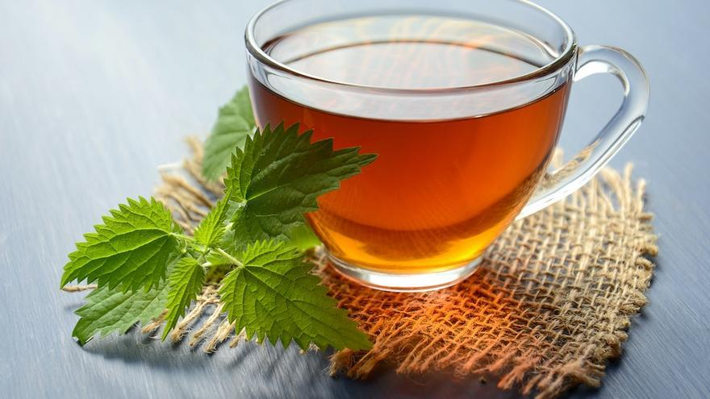
Proviene de la planta Camellia sinensis, el sabor de esta famosa bebida es fresco, ligeramente amargo y astringente, esta planta contiene teína y por ello el nombre de té. Es común que la gente haga mención del té de manzanilla, anís, menta, hierbabuena, entre otros, los cuales en realidad no son té ya que estas hierbas no contienen teína.
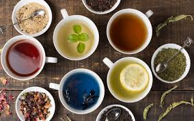
Té Verde: Este se identifica como el principal té en las dietas para adelgazar, por ejemplo, la matcha es destacada por el beneficio de sus antioxidantes. Además, el té verde posee propiedades antiinflamatorias, antivirales, mejora cognitiva y previene enfermedades neurodegenerativas.
Té Blanco: Este té no está procesado, por ello el sabor es delicado y suave. No contiene tanta teína como los demás, es rico en antioxidantes, ayuda a reducir la presión sanguínea, controla el colesterol, mantiene una salud bucal adecuada y tiene propiedades anticancerígenas.
Té Azul: Es una combinación del té verde y té negro, tiene un sabor ligeramente tostado y es destacado por su función digestiva, antioxidantes, fortalece las defensas y regula el nivel de colesterol.
Té Rojo: Este té es fermentado y es destacado por sus efectos calmantes, regula el nivel de colesterol, pierde peso y mejora la concentración.
Té Negro: Para que este té tome el color, la planta lleva un proceso de oxidación que lo lleva a tener un sabor intenso y aroma fuerte. El nivel de teína es más alto que los demás, se destaca por su beneficio disminuyendo la inflamación y mejorando el sistema inmune.
Té Amarillo: Es una combinación de té blanco y té verde obteniendo un sabor suave. Se destaca por su beneficio de antioxidantes y diuréticas, contiene minerales, hierro, fósforo, calcio, flúor, vitaminas B1, B2 y vitamina C.
Té Blanco: Este té no está procesado, por ello el sabor es delicado y suave. No contiene tanta teína como los demás, es rico en antioxidantes, ayuda a reducir la presión sanguínea, controla el colesterol, mantiene una salud bucal adecuada y tiene propiedades anticancerígenas.
Té Azul: Es una combinación del té verde y té negro, tiene un sabor ligeramente tostado y es destacado por su función digestiva, antioxidantes, fortalece las defensas y regula el nivel de colesterol.
Té Rojo: Este té es fermentado y es destacado por sus efectos calmantes, regula el nivel de colesterol, pierde peso y mejora la concentración.
Té Negro: Para que este té tome el color, la planta lleva un proceso de oxidación que lo lleva a tener un sabor intenso y aroma fuerte. El nivel de teína es más alto que los demás, se destaca por su beneficio disminuyendo la inflamación y mejorando el sistema inmune.
Té Amarillo: Es una combinación de té blanco y té verde obteniendo un sabor suave. Se destaca por su beneficio de antioxidantes y diuréticas, contiene minerales, hierro, fósforo, calcio, flúor, vitaminas B1, B2 y vitamina C.
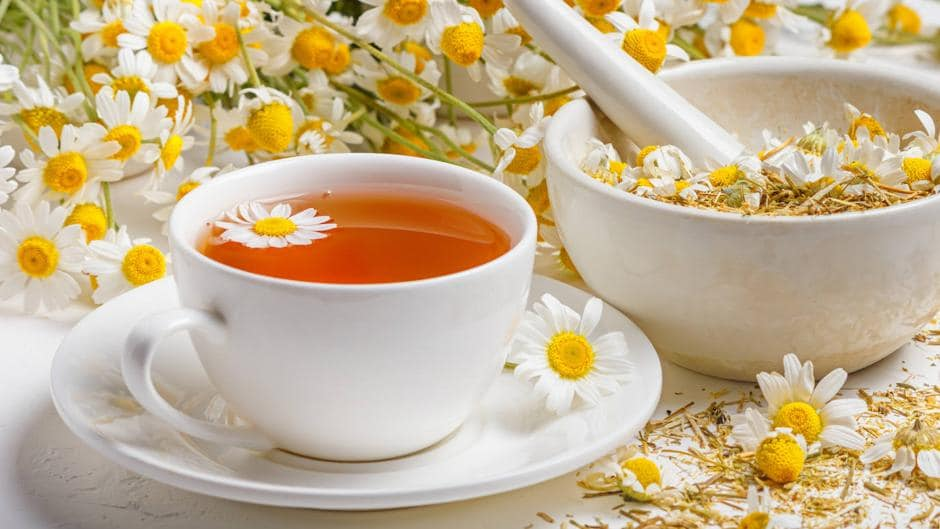
Es una extracción de propiedades con agua caliente, como de manzanilla, menta, hierbas aromáticas, hojas, semillas, camotes, fruta, etc.
Herbolario
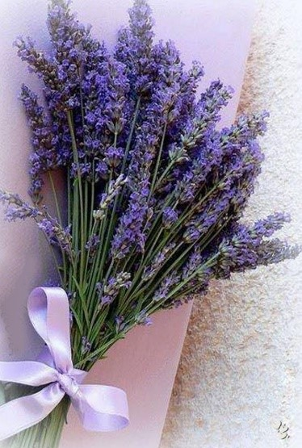
Efecto calmante, relajante, antioxidante
Efecto protector del estómago, tranquilizante, antiséptica, aminora la inflamación, relajante, malestares de la menopausia.
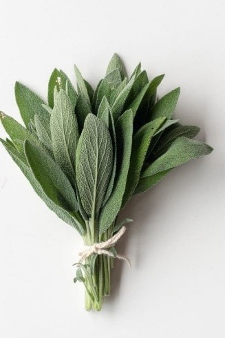
Antibacteriana, antifúngica, antiviral, antioxidante, antiinflamatoria, astringente, antiperspirante.
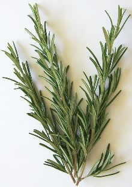
Mejora la digestión, cansancio mental, mejora la circulación, combate la retención de líquidos, protector del hígado, antidiabético, antiinflamatorio.
Antitusivo, expectorante, febrífugo, purgante, antidiabético, antiácido, analgésico, antiséptico.
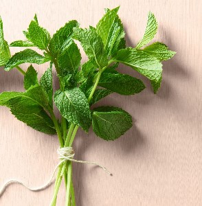
Descongestionante, antiinflamatorio, pérdida de peso, relajante, digestivo, antiséptico, antihistamínico.
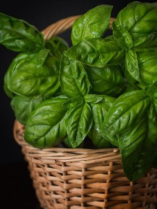
Antiespasmódica, antibacteriana, antiinflamatoria, digestivo, dolor menstrual.
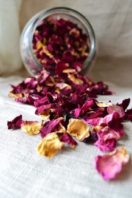
Antigripal, antioxidante, diurético, relajante.
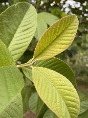
Antiparasitario, antidiarreico, auxilia el ácido úrico, evita la retención de líquidos, antiinflamatorio, antioxidante, anticoagulante.
Tizanas
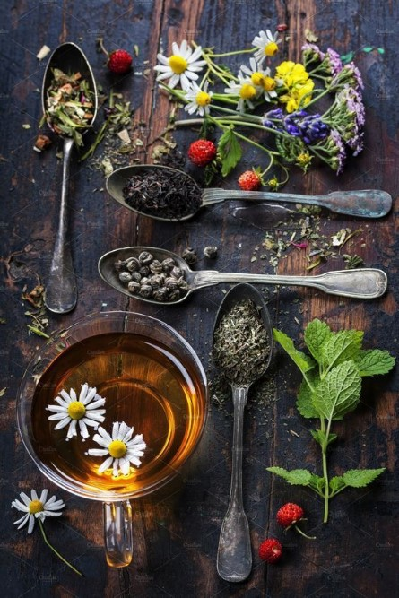
Esta bebida consiste en la extracción de una pequeña variedad de frutos deshidratados, hierbas, raíces, flores, e incluso especias.
Tipos de Tizana
- Rosa Mexicano: Pitaya+Kiwi+Manzana+Blue Berries (Reconfortante)
- Ponche Frutal: Almendra+Canela+Manzana+Jamaica (Reconfortante, Vitamina C, Digestivo)
- Verde Violeta: Té Verde+Violetas+Flor De Aciano (Antioxidante, Metabólico)
- México Prehispánico: Cacao+Dátil+Pasa+Chile Seco+Pétalos De Girasol (Reconfortante, Alto En Vitamina C)
- Relax: Manzanilla+Lavanda+Melissa+Flor De Azahar+Hojas De Fresa (Relajante)
- Imperial: Té Negro+Lavanda+Cáscara De Naranja (Estimulante)
¿Qué es un Chai?
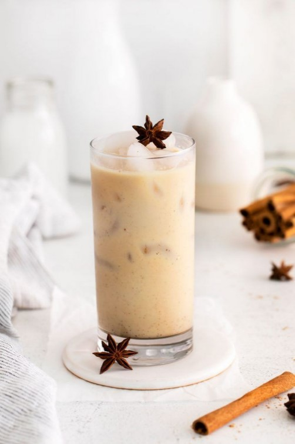
La principal base es el té, acompañado con una mezcla de especias (cardamomo, clavo, anís de estrella, jengibre, canela, etc.) y finalizada con un toque de leche acremada.